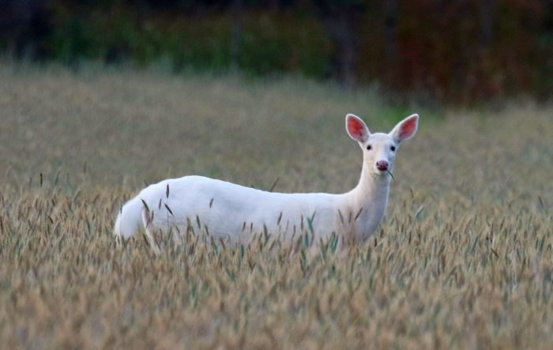
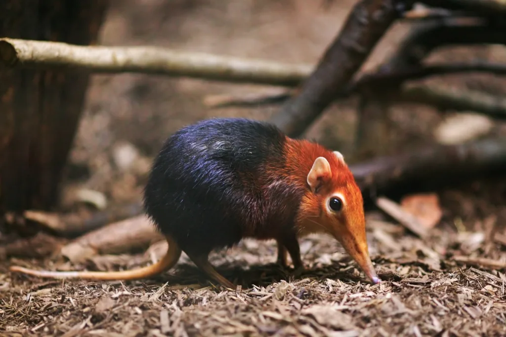
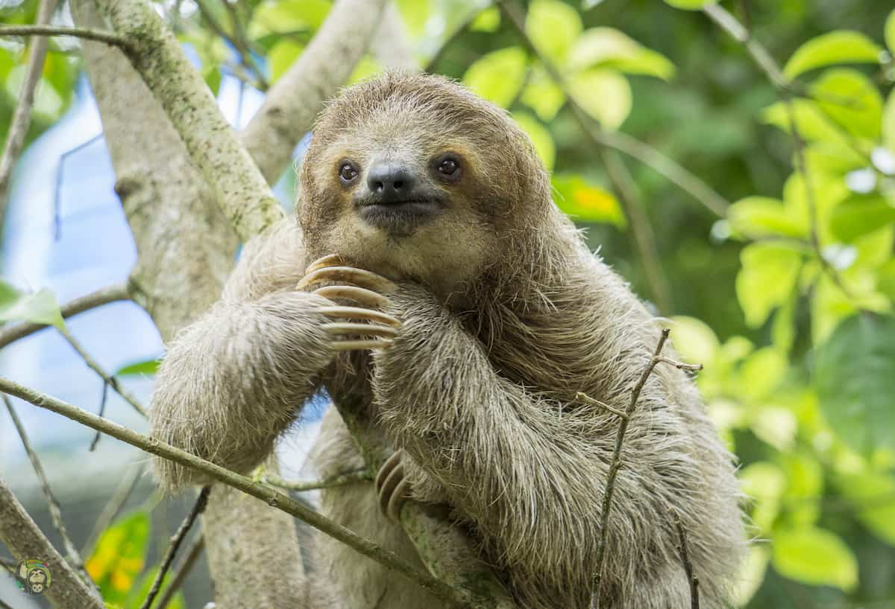

The Seneca White Deer story demonstrates how human activities may significantly affect the environment and living things.

The Senca White Deer, New York
Black and rufous elephant shrews are especially wary creatures that spend most of their time either fleeing from predators or keeping an eye out for them using their keen hearing and smell.

Black and Rufous Elephant Shrew, Africa
The suborder Folivora includes arboreal Neotropical xenarthran animals such as sloths.

The Sloths, South America and Central America